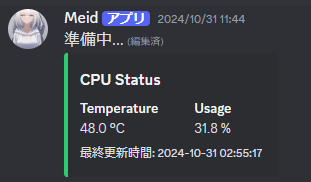

PythonをつかったCPU 温度の取得
最終更新日 2024/11/09
※注意
Linuxサーバーであることを前提として文章を書いています。
はじめに
今回のコードはGithubに上がっています。ぜひそちらもご覧ください。まずは、今回のコードで使用するソフトウェアをを入れます。導入方法は以下の通りです。
sudo apt update
sudo apt install lm-sensors
sudo sensors-detect
sensors
これで使用するソフトの導入は終了です。
コーディング
つぎに、pythonでcpu温度と使用率をコンソールログに出力するコードを書いていきます。
使うモジュールをインストールしてください。
pip install psutil
pip install subprocess
これでモジュールのインストールは完了です。
つぎに、pythonでコーディングしていきます。
以下のコードでは10秒おきに出力しています。
import psutil
import subprocess
# CPU温度を取得する関数
def get_cpu_temp():
try:
# sensorsコマンドの出力を取得
output = subprocess.check_output("sensors | grep 'Package id 0:'", shell=True).decode("utf-8")
# 正規表現で温度の数字部分だけを抽出
temp_match = re.search(r"\+?([0-9]+\.[0-9]+)", output)
if temp_match:
return float(temp_match.group(1))
else:
print("エラー: CPU温度が見つかりませんでした。")
return None
except Exception as e:
print(f"エラー: CPU温度の取得に失敗しました。{e}")
return None
@tasks.loop(seconds=10) # こ↑こ↓の数値を変えることで送信時間を変更できますおすすめは10秒です
async def update_cpu_status():
# CPUの温度と使用率を取得
cpu_temp = get_cpu_temp()
cpu_usage = psutil.cpu_percent(interval=1)
print(f"温度:{cpu_temp}使用率:{cpu_usage}")
これでpythonのコードは終了です。残りは実行のみです
python3 main.py
応用編(DisocrdBot)

10秒おきに埋め込みメッセージを更新します。サポートサーバーなどに使えます。
import discord
from discord.ext import tasks, commands
import psutil
import subprocess
import re
from datetime import datetime
TOKEN = '' # トークンを入力
CHANNEL_ID = 123123123123123123 # 埋め込みを送信するチャンネルID
intents = discord.Intents.default()
bot = commands.Bot(command_prefix="!", intents=intents)
# CPU温度を取得する関数
def get_cpu_temp():
try:
# sensorsコマンドの出力を取得
output = subprocess.check_output("sensors | grep 'Package id 0:'", shell=True).decode("utf-8")
# 正規表現で温度の数字部分だけを抽出
temp_match = re.search(r"\+?([0-9]+\.[0-9]+)", output)
if temp_match:
return float(temp_match.group(1))
else:
print("エラー: CPU温度が見つかりませんでした。")
return None
except Exception as e:
print(f"エラー: CPU温度の取得に失敗しました。{e}")
return None
# CPUステータスをプロフィールに表示する関数
async def update_status():
cpu_temp = get_cpu_temp()
last_update_time = datetime.now().strftime("%Y-%m-%d %H:%M:%S")
if cpu_temp is not None:
status = f"CPU Temp: {cpu_temp} °C | 最終更新: {last_update_time}" #私にはUTCからJSTに変換する技術がありませんでした
await bot.change_presence(activity=discord.Game(name=status))
# 定期的にCPU情報を送信するタスク
@tasks.loop(seconds=1) # こ↑こ↓の数値を変えることで送信時間を変更できますおすすめは10秒です
async def update_cpu_status():
channel = bot.get_channel(CHANNEL_ID)
if channel is None:
print("指定されたチャンネルが見つかりません。チャンネルIDを再確認してください。")
return
# CPUの温度と使用率を取得
cpu_temp = get_cpu_temp()
cpu_usage = psutil.cpu_percent(interval=1)
# 最終更新時間を取得
last_update_time = datetime.now().strftime("%Y-%m-%d %H:%M:%S")
# 埋め込みメッセージを作成
embed = discord.Embed(title="CPU Status", color=discord.Color.blue())
embed.add_field(name="Temperature", value=f"{cpu_temp} °C" if cpu_temp else "取得失敗", inline=True)
embed.add_field(name="Usage", value=f"{cpu_usage} %", inline=True)
embed.set_footer(text=f"最終更新時間: {last_update_time}")
# チャンネルにメッセージを送信または更新
async for message in channel.history(limit=10):
if message.author == bot.user and message.embeds:
await message.edit(embed=embed)
break
else:
await channel.send(embed=embed)
await channel.send(embed=embed)
@bot.event
async def on_ready():
print(f"Logged in as {bot.user}")
if not update_cpu_status.is_running():
update_cpu_status.start() # タスクの開始
bot.run(TOKEN)